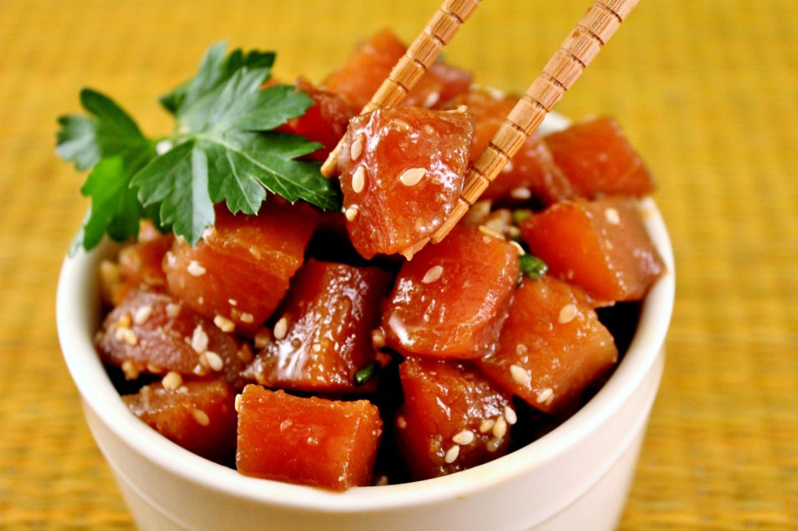

Poke

Description
Poke is diced raw fish served either as an appetizer or a main course and is one of the main dishes of Native Hawaiian cuisine.
Ingredients
- 8 oz fresh or frozen sushi grade tuna, diced
- 1/2 cup light soy sauce
- 1/2 tbsp rice vinegar
- 1/2 cup finely diced onions
- 1/2 cup finely sliced scallions
- 1 tbsp toasted sesame seeds
- 1 tsp sesame oil
Steps
- Add all ingredients in a bowl
- Mix thoroughly but be careful not to squash the fish
- Refrigerate for at least 30 minutes
- Enjoy!